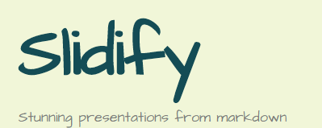
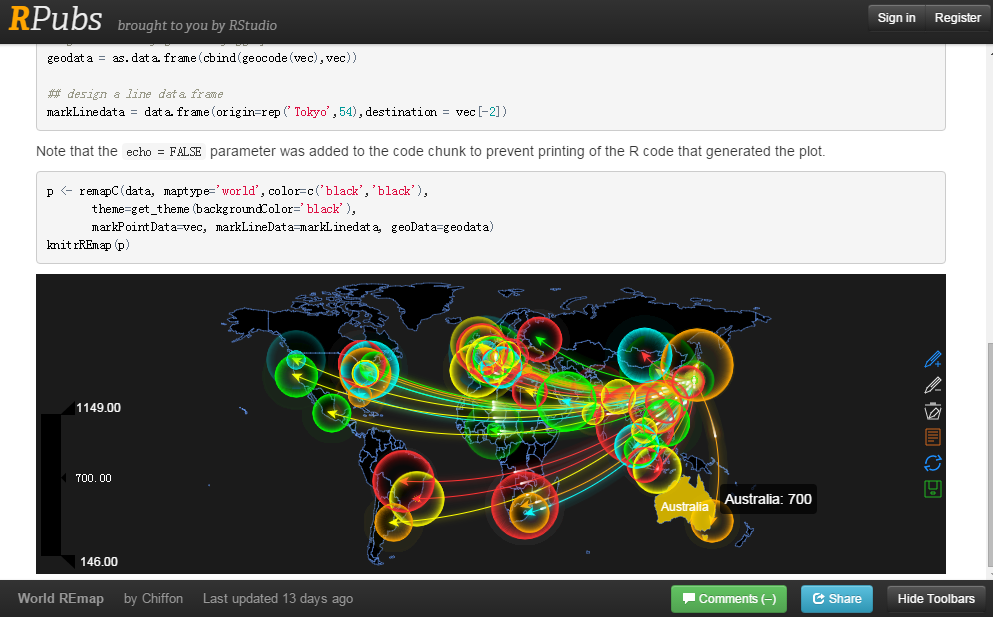
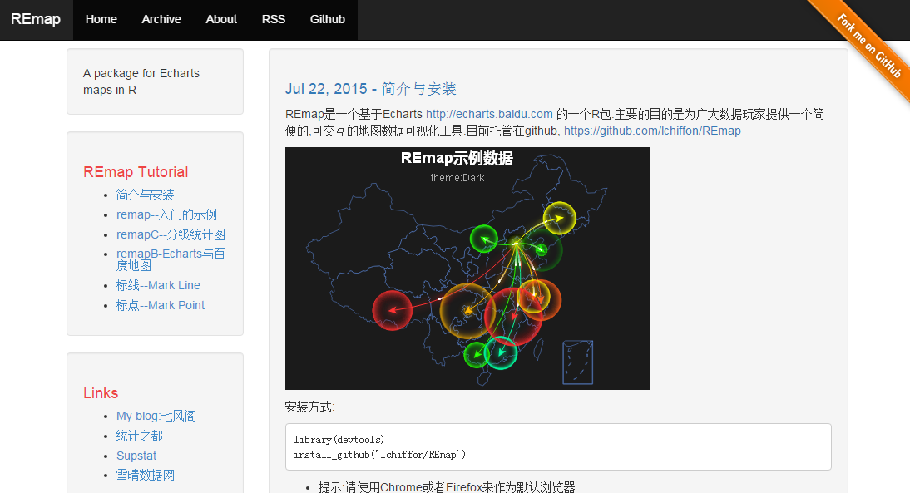
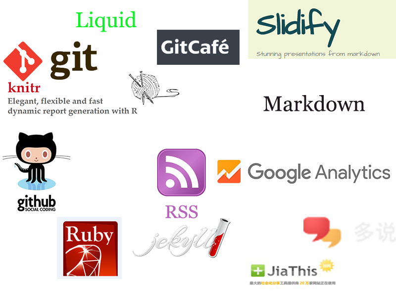

数据科学的博客
从Knitr到Jekyll
Created by Chiffon郎大为
Supstat. Inc 数据科学家

Road Map
- Knitr
- Git & Github
- RSS
- Jekyll

Knitr
- Author: 谢益辉
- 可重复报告
- 论文,博客,报告
- 包含
- Latex
- Markdown
- Html
- Code(R,Python,Ruby,C,...)

R + Markdown
Slidify
- Author: Ramnath Vaidyanathan
- 用Rmd撰写报告
- 缩减优化格式动画的时间
- 花更多的时间在内容上
- UseReveal

Rpubs

Git
- 版本管理工具
- Git三板斧:
- add
- commit
- push

Github
- 多人代码协作
- 以Git为基础
- 最新,最高端的开源项目
- Spark, Hadoop, Docker,..

Example

阅读别人的博客
RSS
- 统一规范的订阅(比如feed.xml)
- 可以使用邮件/App来完成订阅
- 听别人讲故事
- 了解最前沿的技术发展潮流
了解前沿
- 查询我订阅文章中的Deeplearning

构建自己的博客
- Jekyll
- 用Knitr撰写文章
- 用Jekyll生成静态网页
- 使用github部署到网络


Jekyll
优点
- 免费
- 其他Blogger的各种不同的模板
缺点
- 上手稍复杂
- github有可能跪(gitcafe.com)
七风阁

REmap主页

进一步个性化


收获&建议
- 不断学习的状态
- 前端的能力
- H5,REmap
- 跟上数据科学的浪潮
- 不仅与数据打交道

雪晴数据网

Thanks
- 微博@郎大为Chiffon